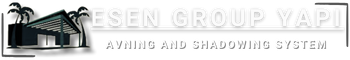

Ana Sayfa
Ürünlerimiz
Giyotin Cam
Pergola
Bioklimatik
Rüzgar Kırıcı
Zip Perde
Wintend
Cam Tavan/ÇAtı
Sürme Cam
Katlanır Kapı
Bahçe Çiti
Renk
İletişim
Ana Menü
Ürünlerimiz
Giyotin
Pergola
Bioklimatik
Rüzgar Kırıcı
Zip Perde
Wintend
Cam Tavan/Çatı
Sürme Cam Sistemleri
Katlanır Kapı
Bahçe Çiti
Renk
İletişim
Wintend Gölgeleme Sistemleri
- Doruk Wintend Gölgeleme Sistemleri; otel, kafe, restoran, villa, konut, teras, kış/yaz bahçesi ve alışveriş merkezleri gibi mekanlarda güneşin olumsuz etkilerinden koruyarak gölgelik alan oluşturmak için geliştirilmiştir. Balkon veya işletmenizi karanlıkta bırakmadan wintend ile gölgelendirebilirsiniz.
TASARIM VE FONKSİYONELLİK
- Doruk Wintend gölgelendirme sisteminde kullanılan RTS teknolojili motorlar uzaktan kumanda ile çalışır ve start-stop teknolojisi sayesinde hareket istenildiği noktada durdurulabilir.
- Sistemin tamamı veya tek bir modülü uzaktan kumanda ile çalıştırılabilir.
- Wintend kumaşı; öngerilim teknolojisi sayesinde gergin durma, güneş ve yağmur suyu geçirmezlik, yıkanabilme ve 5 yıl renk solmazlık garantisine sahiptir. Wintend kumaşı üzerine firmalara özel logo, marka baskısı yapılabilmektedir.
Akrilik Kumaş
- Öngerilim teknolojisi sayesinde gergin durma.
- Güneş ve yağmur suyu geçirmezlik özelliği.
- Yıkanabilir ve silinebilme özelliği.
- 5 yıl renk solmaz garantisi.